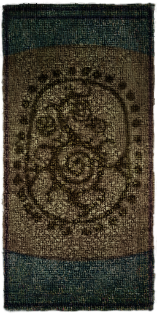
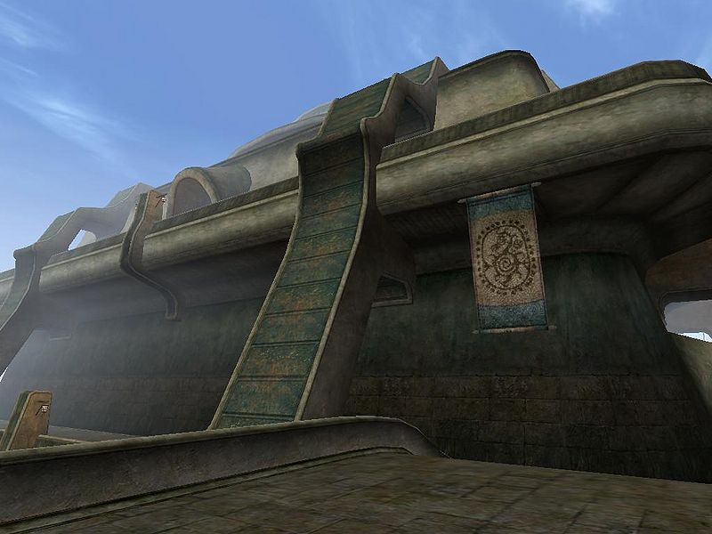
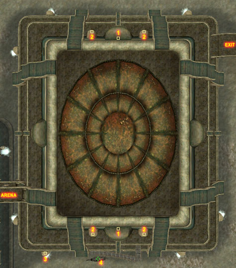
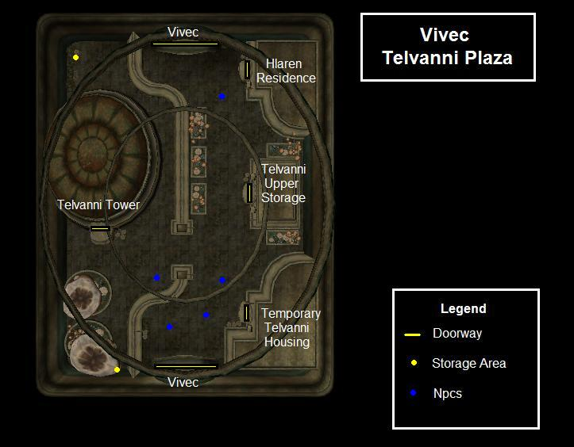
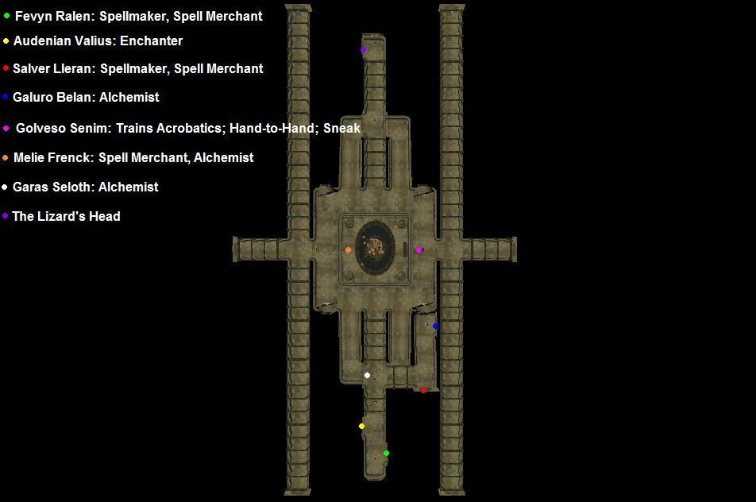
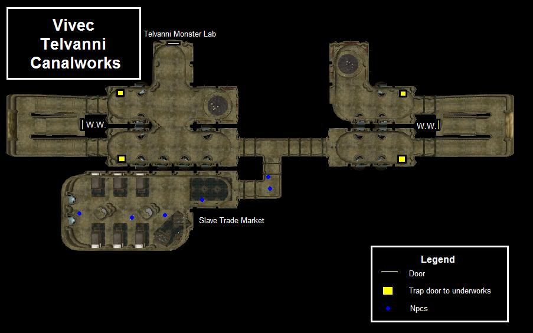

|  |
|
 EThe House Telvanni Canton |
|
 Map of Vivec's Telvanni canton |
The Telvanni Canton is Great House Telvanni's hold in the ancient city of Vivec. House Telvanni does not actually own the canton; it is rented to them by the temple, mainly to prevent the Telvanni mage lords from growing their preferred organic structures. Like the other cantons of Vivec, save for the Foreign Quarter, the Telvanni Canton is divided into four levels: the plaza, the waistworks, the canalworks, and the underworks. Each level is outlined below.
The Telvanni Plaza houses the Telvanni Tower, the political center of House Telvanni in Vivec, as well as the house's prison cells and vaults. You can also find the Telvanni Upper Storage, Temporary Telvanni Housing, and the Hlaren Residence in the plaza. Loot includes two large areas of crates, urns and sacks full of random ingredients, clothes, and clutter. You'll also find a large supply of all four mushroom types on Morrowind.
Telvanni Tower is home to resident Telvanni mage, Mavon Drenim. He rules over the Telvanni Canton much like the eastern Telvanni rule over their towers. The Tower itself is fairly small; it contains only a few areas. Mavon Drenim's room occupies the entire top floor. The dining hall and a small but interesting library reside on the main floor. On the lower level are the Telvanni vaults and prison cells.
Shops here include an Alchemist, a Mage, a Sorcerer, an Enchanter, and an Apothecary. There is a Telvanni Temple on the lower area and The Lizard's Head tavern where Ennbjof has quite the tale about treasures.
You'll find a slave ring to the east with five slaves that you can free. (The owner standing in front of the locked door has the keys). To the west is a Monster Lab with Dwemer Centurions and a Dagoth Dagger lying in the last room behind the stool. There are boxes of supplies in the southeast.
There are two entrances to the Telvanni Canton: from the main entrance, go through the Foreign Quarter and turn left at the Redoran Canton and continue through the Arena Canton; Telvanni Canton should be in sight. Alternatively, you can take a small bridge from the coast directly to the canton, although there are no marked roads to reach this bridge. Gondolier Fendryn Delvi provides transport Arena Canton, Foreign Quarter and Temple Canton.
The vaults can be entered from the Telvanni Tower in the Plaza. The vaults are magically enchanted and upon entering you will find yourself in a void containing two Storm Atronachs. Upon their defeat you are free to enter the next door that leads to the vaults. The real treasure includes two glass Netch daggers, Maryon's Staff, Saint's Blacksword, Greed, a mostly full set of Ebony Armor, Glass Longsword, Daedric Claymore and an Ebony Longsword. Nine chests around the room containing various amounts of random jewels and gold, and some soul gems lie on the table (One grand, two greater, two common).
|  Services in the Plaza |
|  Services in the Waistworks |
|  Services in the Canalworks |